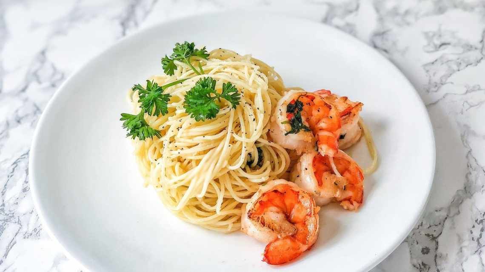

Рецепти
Нижче наведено список улюблених рецептів.
- Паста з креветками
- Овочевий рататуй
- Шоколадний фондан
Паста з креветками
- 200 г пасти фетучіні
- 150 г креветок
- 2 зубчики часнику
- 50 мл оливкової олії
- сіль, перець за смаком
Фото готової страви

Пояснення
- Фетучіні
- Широка плоска паста італійського походження.
- Рататуй
- Овочева запіканка з Провансу.
← Назад на головну